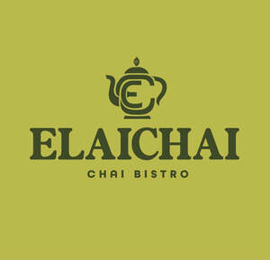

Trade Mark Journal No.2025/051 19 December 2025
UK00004309166 11 December 2025 (29,30,43)

- Class 29
- Meat; Meat and meat products; Steaks of meat; Sausage meat; Turkey meat; Cooked meat; Roast meat; Meat burgers; Minced meat; Canned meat; Meat, canned; Crab meat; Duck meat; Fried meat; Tinned meat; Meat, tinned; Meat pate; Frozen meat; Meat, frozen; Sliced meat; Meat boiled down in soy sauce (tsukudani meat); Salted meat; Dried meat; Canned cooked meat; Donkey meat; Dried fish meat; Freeze-dried meat; Processed meat; Fresh meat; Meat substitutes; Quenelles [meat]; Meat jellies; Cooked meat dishes; Meat paste; Ground meat; Lyophilised meat; Fish meat floss; Meat stocks; Meat gelatines; Prepared meat; Meat floss; Prepared meals made from meat [meat predominating]; Lyophilized meat; Bottled cooked meat; Beef steaks; Dried clam meat; Seitan [meat substitute]; Beef tallow [for food]; Vegetable-based meat substitutes; Meats; Shrimp meat floss; Preserved meat; Meat, preserved; Meat [preserved]; Meat preserves; Frozen meat products; Beef; Bullfrog meat; Galbi [grilled meat dish]; Plant-based imitation meat; Meat extracts; Extracts of meat; Pork steaks; Meat spreads; Cooked meats; Meat extract; Imitation crab meat; Pie fillings of meat; Mincemeat [chopped meat]; Tajine [prepared meat, fish or vegetable dish]; Beef fat; Tagine [prepared meat, fish or vegetable dish]; Food pastes made from meat; Dried whelk meat; Meat products being in the form of burgers; Prepared meat dishes; Roast beef; Beef meatballs; Beef stew; Processed meat products; Chicken sausages; Beef jerky; Cooked poultry; Cabbage rolls stuffed with meat; Dried razor clam meat; Pork jerky; Fish steak; Fish sausages; Flakes of dried fish meat (kezuri-bushi); Poultry meatballs; Steaks of fish; Fish steaks; Canned pork; Beef tripe; Roast poultry; Beef slices; Pork; Meat, tinned [canned (Am.)]; Dried beef; Vegetarian sausages; Tinned meats; Roast pork; Fish; Tuna fish; Fish fillets; Fillets (Fish -); Fish croquettes; Fish with chips; Quenelles [fish]; Cooked fish; Pickled fish; Grilled fish fillets; Fish jellies; Tinned fish; Fish, tinned; Dishes of fish; Tuna fish [preserved]; Salted fish; Fish (Salted -); Fish cakes; Smoked fish; Frozen fish; Canned fish; Fish, canned; Fish crackers; Fish, seafood and molluscs spreads; Dried fish; Fish maw; Fish sticks; Fish balls; Fish floss; Bottled fish; Mousses (Fish -); Fish mousses; Fish stock; Fish, seafood and molluscs, not live; Tuna fish [not live]; Tuna fish, not live; Processed fish roe; Fish roe, prepared; Processed fish; Fish paste; Fish fingers; Sea trout roe for food; Fish, preserved; Preserved fish; Artificial fish roes; Fish preserves; Fish extracts; Snakehead fish, not live; Frozen cooked fish; Fish spawn (Processed -); Processed fish spawn; Foods made from fish; Fish spread; Edible oils derived from fish [other than cod liver oil]; Fish products being frozen; Sea salmon roe for food; Foods prepared from fish; Fish in olive oil; Prepared fish dishes; Fish eggs for human consumption; Boiled and dried fish; Smoked fish spread; Common plaice fish, not live; Bottled fish products; Fish meal for human consumption; Fish, not live; Food products made from fish; Fish (Food products made from -); Anchovy fillets; Seafood; Chicken; Teriyaki chicken; Fried chicken; Chicken gizzards; Roast chicken; Chicken meatballs; Cooked chicken; Chicken salad; Chicken burgers; Chicken wings; Chicken croquettes; Chicken livers; Chicken nuggets; Chicken jerky; Frozen chicken; Grilled chicken (Yakitori); Chicken breast fillets; Chicken pate; Chicken legs; Chicken pieces; Fresh chicken; Chicken stock; Chicken mousse; Dehydrated chicken; Chicken balls; Pulled chicken; Granulated chicken bouillon; Pork cutlets; Deep frozen chicken; Samgyetang [Korean ginseng chicken soup]; Pieces of chicken for use as a filling in sandwiches; Duck gizzards; Cooked duck; Cooked turkey; Turkey burgers; Cooked dish consisting primarily of chicken and ginseng (samgyetang); Roast turkey; Cooked dish consisting primarily of stir-fried chicken and fermented hot pepper paste (dak-galbi); Poultry; Soy sauce marinated crab (Ganjang-gejang); Turkey burger patties; Frozen poultry; Dak galbi [Korean dish consisting primarily of chicken stir-fried in a fermented hot pepper paste]; Poultry salads; Duck eggs; Pork livers; Breaded and fried jalapeno peppers; Turkey; Pre-cooked curry stew; Sliced and seasoned barbequed beef (bulgogi); Marinated eggs; Roast lamb; Beef bouillon; Bulgogi [Korean dish consisting of sliced and seasoned barbecued beef]; Chicken feet for human consumption; Roast ducks; Roast goose; Frozen turkey; Turkey pieces; Duck jerky; Grilled pork belly (samgyeopsal); Bulgogi [Korean beef dish]; Frozen appetizers consisting primarily of chicken; Ready cooked meals consisting primarily of chicken; Beans cooked in soy sauce (Kongjaban); Vegetable burgers; Cooked dish consisting primarily of fermented vegetable, pork and tofu (kimchi-jjigae); Spicy beef broth (yukgaejang); Cooked dish consisting primarily of stir-fried beef and fermented soy sauce (Sogalbi); Fresh poultry; Frozen meals consisting primarily of chicken; Pre-cooked soup; Uncooked hamburger patties; Duck; Egg yolks; Yolk of eggs; Egg whites; Eggs; Egg muffins; Birds eggs and egg products; Hen eggs; Powdered egg whites; Quail eggs; Egg substitutes; Egg substitute; Egg nog (Non-alcoholic -); Non-alcoholic egg nog; White of eggs; Powdered eggs; Eggs (Powdered -); Scotch eggs; Canned quail eggs; Pickled eggs; Sturgeon eggs; Liquid eggs; Steamed egg hotchpotch; Frozen eggs; Salted eggs; Dried eggs; Snail eggs for consumption; Eggs (Snail -) for consumption; Rolled eggs; Processed eggs; Century eggs; Tea flavored eggs; Omelettes; Albumin milk; Milk (Albumin -); Prepared dishes consisting primarily of fishcakes, vegetables, boiled eggs, and broth (oden); Soya bean milk; Omelets; Goose liver pate; Soya bean curd; Seafoods boiled down in soy sauce (tsukudani); Almond milk; Powdered soya milk; Satay; Cooked jackfruit; Ghee; Prepared vegetable dishes; Falafel; Kimchi [fermented vegetable dish]; Cooked seafood; Shish kabobs; Cooked spinach; Rice bran oil [for food]; Rice bran oil for food; Rosti [fried grated potato cakes]; Cooked dish consisting primarily of rich soybean paste and tofu (cheonggukjang-jjigae); Hummus [chickpea paste]; Veggie burger patties; Noodle soup; Potato-based gnocchi; Antipasto salads; Pre-cooked miso soup; Meatballs; Vegetables pickled in soy sauce; Fruit desserts; Desserts of yogurt; Yoghurt desserts; Dairy desserts; Chilled dairy desserts; Fruit-based snack food; Snack food (Fruit-based -); Fruit-based fillings for cakes and pies; Tofu-based snack food; Cheese-based snack foods; Fruit pie fillings; Fruit-based meal replacement bars; Meat-based snack food; Apple sauce (compote); Nut-based snack foods; Candied fruit snacks; Compote; Vegetable-based snack food; Milk-based beverages flavored with chocolate; Coffee creamer; Coffee creamers; Rice milk; Rice milk for culinary purposes; Rice milk [milk substitute]; Rice milk for use as a milk substitute; Fat-based spreads for bread slices; Jellies [bread spreads]; Butter; Edible fat-based spreads for bread; Garlic butter; Honey butter; Cocoa butter for food; Almond butter; Butter for use in cooking; Apple butter; Fermented baked milk; Pepperoni; Burgers; Hamburgers; Hotdog sausages; Potato fries; Waffle fries; Tofu burger patties; Chips [french fries]; French fries; Frozen french fries; Fried potatoes; Soy burger patties; Potato pancakes; Low-fat potato chips; Coleslaw; Potato salads; Low-fat potato crisps; Potato chips; Chips (Potato -); Crisps (Potato -); Potato crisps; Yuca chips; Milkshakes; Potato fritters; Potato salad; Bacon; Potato-based salads; Grated potato nuggets; Potato snacks; Potato crisps in the form of snack foods; Potato snack foods; Yucca chips; Fried platano; Vegetable chips; Kale chips; Soy chips; Purple sweet potato chips; Banana chips; Crisps; Vegetable crisps; Frozen chips; Potato dumplings; Croquettes; Fruit snacks; Desserts made from milk products; Milk-based snacks; Miso soup; Instant miso soup; Soup; Broth [soup]; Doenjang jjigae [Korean dish consisting primarily of tofu with soybean paste]; Soup pastes; Kimchi jjigae [Korean dish consisting primarily of fermented vegetables, pork and tofu]; Cheonggukjang jjigae [Korean dish consisting primarily of tofu with rich soybean paste]; Matzo ball soup; Uncongealed tofu (Tofu nao); Tofu; Tube-shaped toasted cakes of fish paste (chikuwa); Instant soup; Cooked dish consisting primarily of soybean paste and tofu (doenjang-jjigae); Chantilly cream; Fruit marmalade; Candied fruit; Fruit salads; Salads (Fruit -); Fruit pectin; Fruit rinds; Fruit purees; Stewed fruit; Fruit pulp; Pulp (Fruit -); Fruit, stewed; Dried fruit; Fruit peel; Peel (Fruit -); Fruit preserves; Fruit jams; Processed lychee fruit; Aromatized fruit; Fruit pulps; Fruit leathers; Sliced fruit; Fruit chips; Chips (Fruit -); Fruit conserves; Crystallised Fruit; Fruit Powders; Crystallized fruit; Fruit flavoured yoghurts; Fruit spreads; Candied fruits; Fruit, preserved; Fruit, processed; Fruit paste; Fruit juices for cooking; Fruit spread; Fruit jellies [not being confectionery]; Fermented fruits; Mixtures of fruit and nuts; Jellies, jams, compotes, fruit and vegetable spreads; Fruit jelly spreads; Dried fruit products; Vegetable salads; Salads (Vegetable -); Vegetable puree; Vegetable purees; Vegetable oils for food; Vegetable oil for food; Vegetable fats for food; Vegetable pate; Vegetable extracts for food; Vegetable jellies; Vegetable stock; Vegetable mousses; Vegetable fats for cooking; Mousses (Vegetable -); Pre-cut vegetable salads; Vegetable powders; Vegetable extracts for cooking; Vegetable soup preparations; Soup preparations (Vegetable -); Vegetable pastes; Vegetable juices for cooking; Juices (Vegetable -) for cooking; Vegetable preserves; Quick-frozen vegetable dishes; Vegetable spreads; Vegetable juice concentrates for food; Vegetable marrow paste; Fermented vegetable foods [kimchi]; Prepared vegetable products; Formed textured vegetable protein for use as a meat substitute; Blended vegetable oils for culinary purposes; Vegetables in vinegar; Preserved vegetables (in oil); Vegetables preserved in oil; Processed shallots [used as a vegetable, not seasoning]; Vegetable extracts for culinary purposes; Pumpkin seed oil for food; Fermented vegetables; Pickled vegetables; Pre-cut vegetables for salads; Canned vegetables; Vegetables, canned; Tinned vegetables; Vegetables, tinned; Extracts of vegetables [juices] for cooking; Vegetables, cooked; Cooked vegetables; Grilled vegetables; Soy bean oil [for food]; Soya bean oil for food; Mixed vegetables; Edible oil; Pre-cut vegetables; Canola oil for food; Bone oil, edible; Edible bone oil; Frozen vegetables; Sunflower oil for food; Sunflower oil [for food]; Clam juice; Truffle juice; Tomato juice for cooking; Milk-based beverages containing fruit juice; Lemon juice for culinary purposes; Tomato concentrates [puree]; Flavoured milk drinks; Lemon curd; Apple puree; Milk drinks; Flavoured milk powder for making drinks; Yogurt drinks; Coconut milk [beverage]; Coconut milk used as beverage; Milk drinks containing fruits; Yoghurt drinks; Drinking yoghurt; Koumiss [milk beverage]; Milk beverages; Drinking yogurts; Jellies for food, other than confectionery; Strawberry jam; Raspberry jam; Blueberry jams; Rhubarb jam; Rhubarb in syrup; Cranberry compote; Berry soup; Cranberry jam; Dried strawberries; Cranberry sauce [compote]; Almond jelly; Blackberry jam; Strawberries being preserved; Plum jam; Tomato purée; Peach flakes; Tomato preserves; Pickled watermelon rind; Maraschino cherries; Orange and ginger marmalade; Apple purée; Corned beef; Veal; Corned beef hash; Pork loin; Roast beef flavoured extract; Venison; Mutton slices; Luncheon meats; Prepared beef; Bacon bits; Fried tofu pieces (abura-age); Abura-age [pieces of fried tofu]; Freeze-dried tofu pieces (kohri-dofu); Potato flakes; Flakes (Potato -); Frozen frog legs; Potato cakes; Crab cakes; Buttercream.
- Class 30
- Egg noodles; Egg tarts; Egg pies; Egg rolls; Easter eggs; Chocolate eggs; Egg roll cookies; Pasta containing eggs; Non-medicated confectionery in the shape of eggs; Chicken sandwiches; Bean flour; Chicken gravy; Bread with soy bean; Sandwiches containing chicken; Custard powder; Seasoned coating for meat, fish, poultry; Potato flour; Sandwich wraps [bread]; Sandwiches; Hamburger sandwiches; Toasted cheese sandwich; Wraps [sandwich]; Toasted cheese sandwich with ham; Frankfurter sandwiches; Cheeseburgers [sandwiches]; Turkey sandwiches; Toasted sandwiches; Wrap sandwiches; Sandwiches containing salad; Fish sandwiches; Sandwiches containing hamburgers; Sandwiches containing meat; Ice cream sandwiches; Sandwich spread made from chocolate and nuts; Open sandwiches; Filled sandwiches; Hot dog sandwiches; Sandwiches containing fish; Sandwiches containing fish fillet; Burgers contained in bread rolls; Pita bread; Pizza; Hot sausage and ketchup in cut open bread rolls; Hamburgers contained in bread buns; Pizza crusts; Hamburgers contained in bread rolls; Pizza sauce; Salad cream; Bacon buns; Bread buns; Bread and buns; Bean jam buns; Taco chips; Hamburgers being cooked and contained in a bread roll; Pizza crust; Pizza pies; Sandwiches containing minced beef; Multigrain bread; Onion or cheese biscuits; Frozen pizza crusts; Tortilla snacks; Pizza sauces; Danish bread rolls; Taco sauce; Hamburgers in buns; Pita chips; Biscuits for cheese; Tortilla chips; Soda bread; Toasted bread; Stuffed bread; Bread; Kebab sauce; Macaroni salad; Pasta salad; Flaky pastry containing ham; Cereal snack foods flavoured with cheese; Bread biscuits; Frozen pizza crusts made of cauliflower; Ready to eat savory snack foods made from maize meal formed by extrusion; Bread rolls; Rolls (Bread -); Rolls [bread]; Cheese sauce; Pizza dough; Bean meal; Naan bread; Burritos; Mayonnaise with pickles; Frozen pizza; Quesadillas; Cream buns; Sopapillas [fried bread]; Frozen pastry stuffed with meat; Mustard meal; Gluten-free pizza; Jam buns; Nachos; Salad sauces; Bread pudding; Pizza flour; Sausage rolls; Danish bread; Graham cracker pie crusts; Ice cream; Cream (Ice -); Ice milk [ice cream]; Non-dairy ice cream; Cones for ice cream; Ice cream cones; Ice cream desserts; Dairy ice cream; Yoghurt based ice cream [ice cream predominating]; Ice cream cakes; Ice cream confectionery; Sauces for ice cream; Ice cream confections; Ice cream drinks; Ice cream powder; Ice cream with fruit; Fruit ice cream; Ice creams; Vegan ice cream; Ice cream gateaux; Ice cream bars; Powders for ice cream; Ice cream powders; Imitation ice cream; Ice; Ice cream mixes; Ice cream substitute; Ice cream cone mixes; Ice, ice creams, frozen yogurts and sorbets; Fruit ice creams; Ice cream stick bars; Powder for making ice cream; Ice cream infused with alcohol; Frozen confectionery containing ice cream; Ice creams flavoured with chocolate; Powders for making ice cream; Ice creams containing chocolate; Mixtures for making ice cream; Soya-based ice cream substitutes; Instant ice cream mixes; Soy-based ice cream substitute; Ice lollies; Substances for binding ice cream; Binding agents for ice cream [edible ices]; Coffee-based beverages containing ice cream (affogato); Mixtures for making ice cream confections; Binding preparations for ice cream [edible ices]; Ice cream (Binding agents for -); Binding agents for ice cream; Ice candy; Ice confectionery; Cream pies; Soya based ice cream products; Ice confections; Cream cakes; Ice cubes; Fruit ice; Ice lollies being milk flavoured; Organic binding agents for ice cream; Ice candies; Mixtures for making ice cream products; Ice beverages with a chocolate base; Ice milk bars; Cream puffs; Ice for refreshment; Water ice; Cooling ice; Ice [frozen water]; Cream crackers; Ice lollies containing milk; Edible ice; Truffle cream sauces; Mixtures for making ice creams; Ice pops; Ice-cream; Ice blocks; Edible ice powder for use in icing machines; Ice beverages with a cocoa base; Samosas; Curry spices; Kheer mix (rice pudding); Papadums; Curry sauces; Rice dumplings; Cooked rice; Rice vermicelli; Curry [spice]; Chutney; Satay sauces; Laksa; Curry [seasoning]; Poppadoms; Cooked rice mixed with vegetables and beef (bibimbap); Fried rice; Chow mein [noodle-based dishes]; Prepared rice dishes; Rice cakes; Cakes (Rice -); Gimbap [Korean rice dish]; Papads; Chinese stuffed dumplings (gyoza, cooked); Bibimbap [Korean dish consisting primarily of cooked rice with added vegetables and beef]; Chinese steamed dumplings (shumai, cooked); Curry mixes; Stir fried rice cake [topokki]; Couscous [semolina]; Rice pudding; Poppadums; Curry paste; Curry pastes; Rice puddings; Rice mixed with vegetables and beef [bibimbap]; Bibimbap [rice mixed with vegetables and beef]; Sambals; Curry spice mixes; Flour for making dumplings of glutinous rice; Rice based dishes; Ramen [Japanese noodle-based dish]; Japanese noodle-based dish (Ramen); Sauces for rice; Vermicelli; Rice biscuits; Curried food pastes; Curry powders; Rice pasta; Korean traditional rice cake [injeolmi]; Rice-based pudding dessert; Chicken pies; Rice salad; Semolina pudding; Rice noodles; Stir-fried rice; Sauces for chicken; Rice porridge; Popadoms; Rice cake snacks; Pizza spices; Rice; Chickpea pasta; Lentil pasta; Couscous; Flour-based dumplings; Shrimp dumplings; Gimbap [Korean dish consisting of cooked rice wrapped in dried seaweed]; Pasta dishes; Vermicelli [noodles]; Dumplings; Curry powder [spice]; Fried noodles; Pelmeni [dumplings stuffed with meat]; Rice crisps; Pounded rice cakes (mochi); Curry powder; Meat gravies; Gravies (Meat -); Jiaozi [stuffed dumplings]; Turmeric for food; Glutinous rice; Rice flour porridge; Kasha [meal]; Lyophilised dishes with main ingredient being rice; Lyophilised dishes with the main ingredient being rice; Korean-style dumplings (mandu); Chinese rice noodles (bifun, uncooked); Chutneys; Seasonings for instant-boiled mutton; Steamed rice; Half-moon-shaped rice cake [songpyeon]; Pasta; Pasta sauce; Quinoa pasta; Sauces for use with pasta; Sauces for pasta; Pasta sauces; Pasta for soups; Wholemeal pasta; Truffle pasta; Buckwheat pasta; Pasta shells; Dried pasta; Stuffed pasta; Vegetable-based seasonings for pasta; Fresh pasta; Alimentary pasta; Prepared pasta; Pasta products; Dried pasta foods; Canned pasta foods; Ravioli; Tortellini; Pasta preserves; Filled pasta; Spaghetti sauce; Cereals for use in making pasta; Spaghetti and meatballs; Spaghetti with meatballs; Canned spaghetti in tomato sauce; Dried and fresh pastas, noodles and dumplings; Flour-based gnocchi; Pesto [sauce]; Gnocchi; Pasta containing stuffings; Lasagna; Spaghetti; Spaghetti [uncooked]; Wholemeal noodles; Alfredo sauce; Pasta for incorporating into pizzas; Noodles; Udon noodles [uncooked]; Dried tortellini; Shrimp noodles; Risotto; Pesto; Lasagne; Lyophilised dishes with main ingredient being pasta; Lyophilised dishes with the main ingredient being pasta; Freeze-dried dishes with main ingredient being pasta; Freeze-dried dishes with the main ingredient being pasta; Macaroni [uncooked]; Pasta containing fillings; Deep frozen pasta; Pasta in the form of sheets; Ziti; Soba noodles; Soba noodles [japanese noodles of buckwheat, uncooked]; Somen noodles [very thin wheat noodle, uncooked]; Macaroni; Starch noodles; Polenta; Lyophilized dishes with main ingredient being pasta; Lyophilized dishes with the main ingredient being pasta; Udon noodles; Macaroni with cheese; Macaroni cheese; Cannelloni; Buckwheat noodles; Artichoke sauce; Uncooked pizzas; Ramen noodles; Sauces for pizzas; Tomato sauce; Sauce (Tomato -); Shrimp sauce; Chinese noodles [uncooked]; Somen noodles; Ravioli [prepared]; Dry and liquid ready-to-serve meals, mainly consisting of pasta; Dried noodles; Starch vermicelli; Mushroom sauces; Snack foods consisting principally of pasta; Breadsticks; Stir-fried noodles with vegetables (Japchae); Frozen prepared rice with seasonings and vegetables; Chili sauce; Frozen meals consisting primarily of pasta; Meals consisting primarily of pasta; Soy sauce [soya sauce]; Fish sauce; Prepared meals containing [principally] pasta; Rice crusts; Dessert puddings; Dessert souffles; Chocolate desserts; Instant dessert puddings; Puddings for use as desserts; Tiramisu; Muesli desserts; Custards [baked desserts]; Cheesecake; Prepared desserts [pastries]; Prepared desserts [confectionery]; Fruit cake snacks; Breakfast cake; Chocolate cake; Prepared desserts [chocolate based]; Foodstuffs made of a sweetener for making a dessert; Ice-cream cakes; Foodstuffs made of sugar for making a dessert; Mousse confections; Sorbet; Custard-based fillings for cakes and pies; Chocolate cakes; Profiteroles; Macaroons [pastry]; Candy cake; Chocolate-based fillings for cakes and pies; Savory pancakes; Cheesecakes; Chocolate fondue; Savory pastries; Chocolate sweets; Chocolate decorations for cakes; Almond cake; Iced fruit cakes; Chocolate pastries; Meal; Savoury pancakes; Foodstuffs made of sugar for sweetening desserts; Chocolate drink preparations flavoured with banana; Candy cake decorations; Pies [sweet or savoury]; Chocolate confections; Fruit cakes; Strawberry gateaux; Chocolate for toppings; Chocolate brownies; Chocolate drink preparations flavoured with mocha; Chocolate drink preparations; Foodstuffs made of a sweetener for sweetening desserts; Dairy-free chocolate; Chocolate drink preparations flavoured with toffee; Cake frosting; Chocolate syrups for the preparation of chocolate based beverages; Rice-based snack food; Snack food (Rice-based -); Chocolate topping; Savory biscuits; Chocolate beverages; Drinks prepared from chocolate; Drinks flavoured with chocolate; Chocolate confectionery having a praline flavour; Pastries, cakes, tarts and biscuits (cookies); Chocolate-based meal replacement bars; Sugar-free sweets; Deep chocolate cake made with chocolate sponge; Songpyeon [half-moon-shaped rice cakes with sweet or semi-sweet fillings]; Chocolate waffles; Cupcakes; Chocolate flavoured beverage making preparations; Quiche [tart]; Cake decorations made of candy; Mousse (sweet); Chocolate for confectionery and bread; Mousses (Chocolate -); Chocolate mousses; Pavlovas flavoured with hazelnuts; Chocolate food beverages not being dairy-based or vegetable based; Aperitif biscuits; Chocolate drink preparations flavoured with mint; Half-moon-shaped cake of rice containing sweet or semi-sweet fillings (songpyeon); Sweets (Non-medicated -) in the nature of chocolate eclairs; Chocolate marzipan; Chocolate-coated rice cakes; Custard tarts; Chocolate sauce; Shortcake; Frozen yogurt cakes; Chocolate flavoured beverages; Chocolate sauces; Baklava; Tarts [sweet or savoury]; Vegan cakes; Sopapillas [fried pastries]; Chocolate drink preparations flavoured with nuts; Iced cakes; Chocolate candy with fillings; Cake icing; Cake frosting [icing]; Frosting [icing] (Cake -); Icing for cakes; Cake batter; Sponge cake; Cake dough; Cakes; Cake flour; Cake doughs; Treacle cake; Cake Pops; Cake mixes; Cake bars; Cake powder; Powder (Cake -); Cake preparations; Cake mixtures; Sponge cakes; Dough for cakes; Iced sponge cakes; Tea cakes; Plum cakes; Chocolate covered cakes; Candy decorations for cakes; Barm cakes; Crystallized sugar for decorating cakes; Icing; Chimney cakes; Malt cakes; Moon cakes; Flavorings for cakes; Frozen cakes; Flapjacks [griddle cakes]; Flavourings for cakes; Millet cakes; Sponge fingers [cakes]; Icing sugar; Candied cakes of popped rice; Powder for making cakes; Mixes for making cakes; Brownies; Frosting mixes; Icing mixes; Chocolate biscuits; Mixtures for making cakes; Marzipan; Brownie dough; Steamed sponge cakes (fagao); Tea; Oolong tea [Chinese tea]; Oolong tea; Rooibos tea; Chai tea; Iced tea; Tea (Iced -); Chamomile tea; Tieguanyin tea; Darjeeling tea; Herbal tea; Peppermint tea; Black tea [English tea]; Ginseng tea; Ginger tea; Jasmine tea; Tea beverages; Green tea; Tea bags for making non-medicated tea; Tea for infusions; Instant Oolong tea; Tea bags; Rosemary tea; Barley tea; Buckwheat tea; Fermented tea; Tea leaves; Tea extracts; Citron tea; Flavourings of tea; Kelp tea; Tea beverages with milk; Sage tea; Lapsang souchong tea; Tea pods; Lime tea; Black tea; White tea; Teas; Iced tea (Non-medicated -); Tea essences; Linden tea; Iced teas; Herb tea [infusions]; Yellow tea; Mate [tea]; Beverages with tea base; Beverages with a tea base; Instant tea; Barley-leaf tea; Red ginseng tea; Tea mixtures; Ginseng tea [insamcha]; Tea substitutes; Tea (Non-medicated -); Herbal tea [other than for medicinal use]; Artificial tea; Beverages made of tea; Instant green tea; Japanese green tea; Non-medicinal herbal tea; Theine-free tea; Herbal teas; Tisanes made of tea (Non-medicated -); Iced tea mix powders; Tea beverages (Non-medicated -); Packaged tea [other than for medicinal use]; Roasted barley tea [mugicha]; Apple flavoured tea [other than for medicinal use]; Chrysanthemum tea (Gukhwacha); Iced coffee; Fruit flavoured tea [other than medicinal]; Tea bags (Non-medicated -); Jasmine tea bags, other than for medicinal purposes; Roasted barley tea; Lime blossom tea; Instant white tea; Orange flavoured tea [other than for medicinal use]; Instant black tea; Coffee; Fruit teas; Artificial tea [other than for medicinal use]; Jasmine tea, other than for medicinal purposes; Tea extracts (Non-medicated -); Mugi-cha [roasted barley tea]; Rose hip tea; Decaffeinated coffee; Yuja-cha (Korean honey citron tea); Flavourings of tea for food or beverages; Coffee, teas and cocoa and substitutes therefor; Herbal teas [infusions]; Caffeine-free coffee; Earl grey tea; Earl Grey tea; Tea essences (Non-medicated -); Roasted brown rice tea; Theine-free tea sweetened with sweeteners; Chocolate coffee; Coffee drinks; Coffee beans; Mixtures of malt coffee with coffee; Coffee beverages; Coffee (Unroasted -); Unroasted coffee; Coffee extracts for use as substitutes for coffee; Coffee essences for use as substitutes for coffee; Coffee substitutes [artificial coffee or vegetable preparations for use as coffee]; Malt coffee; Coffee pods; Coffee beverages with milk; Flavoured coffee; Coffee bags; Unroasted coffee beans; Coffee flavorings; Coffee capsules; Mixtures of malt coffee extracts with coffee; Roasted coffee beans; Instant coffee; Freeze-dried coffee; Coffee flavourings; Beverages with coffee base; Beverages with a coffee base; Coffee oils; Espresso; Ground coffee; Coffee based drinks; Coffee in whole-bean form; Sugar-coated coffee beans; Beverages made from coffee; Beverages made of coffee; Coffee extracts; Ground coffee beans; Drip bag coffee; Substitutes (Coffee -); Coffee substitutes; Aerated drinks [with coffee, cocoa or chocolate base]; Coffee essences; Chicory for use as substitutes for coffee; Coffee mixtures; Coffee based beverages; Mixtures of coffee; Cappuccino; Aerated beverages [with coffee, cocoa or chocolate base]; Chicory [coffee substitute]; Prepared coffee and coffee-based beverages; Coffee concentrates; Coffee in brewed form; Mixtures of coffee and chicory; Mixtures of coffee essences and coffee extracts; Mixtures of malt coffee with cocoa; Powdered coffee in drip bags; Ice beverages with a coffee base; Prepared coffee beverages; Coffee essence; Malt coffee extracts; Mixtures of coffee and malt; Coffee [roasted, powdered, granulated, or in drinks]; Barley for use as a coffee substitute; Chocolate bark containing ground coffee beans; Extracts of coffee for use as flavours in beverages; Rice tapioca; Flour of rice; Rice flour; Glutinous rice flour; Brown rice; Husked rice; Wholemeal rice; Rice crackers; Rice starch flour; Creamed rice; Rice snacks; Puffed rice; Rice chips; Onigiri [rice balls]; Onigiri (rice balls); Enriched rice [uncooked]; Rice sticks; Rice mixes; Enriched rice; Artificial rice [uncooked]; Eight-treasure rice pudding; Prepared rice; Edible rice paper; Injeolmi [glutinous rice cakes coated with powdered beans]; Rice crackers [senbei]; Senbei [rice crackers]; Senbei (rice crackers); Instant rice; Sticky rice cakes (Chapsalttock); Foodstuffs made of rice; Pellet-shaped rice crackers (arare); Glutinous pounded rice cake coated with bean powder (injeolmi); Natural rice flakes; Glutinous rice wrapped in bamboo leaves (Zongzi); Fermenting malted rice (Koji); Cakes of sugar-bounded millet or popped rice (okoshi); Prepared rice rolled in seaweed; Rice glue balls; Wild rice [prepared]; Dried sugared cakes of rice flour (rakugan); Korean-style dried seaweed rolls containing cooked rice (gimbap); Rice dumplings dressed with sweet bean jam (ankoro); Snack food products made from rice flour; Maize flour; Barley flour [for food]; Barley flour for food; Corn flour [for food]; Breakfast cereals made of rice; Sweet pounded rice cakes (mochi-gashi); Tapioca flour [for food]; Tapioca flour for food; Frozen prepared rice; Corn flour; Flour of corn; Corn starch flour; Frozen prepared rice with seasonings; Boxed lunches consisting of rice, with added meat, fish or vegetables; Wheat flour [for food]; Soya flour for food; Wholemeal bread; Rye bread; Unleavened bread; Bread crumbs; Bread doughs; Garlic bread; Fruit bread; Pitta bread; Gluten-free bread; Malt bread; Bread (Ginger -); Ginger bread; Currant bread; Unfermented bread; Pre-baked bread; Fresh bread; Bread sticks; Nan bread; Wholemeal bread mixes; Flat bread; Low-salt bread; Steamed bread; Bread mixes; Whole wheat bread; Semi-baked bread; Corn bread mix; Soft rolls [bread]; Breads; Bread concentrates; Malted bread mix; Cornflour bun bread (almojábana); Bread flavored with spices; Bread flavoured with spices; Filled bread rolls; Chocolate spreads for use on bread; Butter biscuits; Unleavened bread in thin sheets; Bread made with soya beans; Fruit breads; Mixes for the preparation of bread; Bread casings filled with fruit; Bread improvers being cereal based preparations; Bread with sweet red bean; Hushpuppies [breads]; Stuffing mixes containing bread; Pumpernickel; Wheaten flour; Toasted grain flour; Baguettes; Danish butter cookies; Fruited malt loaf; Rye flour; Potato flour for food; Potato flour [for food]; Crisp breads; Snack food products made from rusk flour; Snack foods consisting principally of bread; Croissants; Snack food products made from potato flour; Flour for doughnuts; Cereal flour; Flour for food; Wheat flour; Dough flour; Peanut butter confectionery chips; Snack food products made from cereal flour; Foodstuffs made from dough; Pizzas; Fresh pizza; Pizza bases; Pizza mixes; Frozen pizzas; Pizza dough mix; Chilled pizzas; Pre-baked pizzas crusts; Prepared pizza meals; Calzones; Fresh pizzas; Pizzas [prepared]; Preserved pizzas; Pie crusts; Sushi; Meat pies; Pies (Meat -); Prepared meals in the form of pizzas; Preparations for making pizza bases; Pies; Frozen yogurt pies; Frozen brownie dough; Fried dough cookies; Blueberry pies; Pumpkin pies; Lomper [potato-based flatbread]; Chocolate-covered potato chips; Fried corn; Shrimp chips; Frozen French toast; Waffles; Frozen French toast sticks; Ketchup; Ketchup [sauce]; Tacos; Vegetable flavoured corn chips; French toast; Corn chips; Cheese flavored puffed corn snacks; Pancakes; Cheese curls [snacks]; Waffles with a chocolate coating; Seaweed flavoured corn chips; Frozen waffles; Frozen pancakes; Chimichangas; Remoulade sauce; Aioli; Onion biscuits; Tomato ketchup; Kimchi pancakes; Chocolate chips; Potato starch for food; Potato-based flatbreads; Puffed cheese balls [corn snacks]; Pastries; Danish pastries; Pastries with fruit; Fruit pastries; Pâté [pastries]; Almond pastries; Viennese pastries; Frozen pastries; Pastries filled with fruit; Pastries containing fruit; Brioches; Pastries containing creams and fruit; Pastries containing creams; Aromatic preparations for pastries; Mixtures for making pastries; Pastries consisting of vegetables and fish; Bagels; Pastry; Pastries consisting of vegetables and meat; Pastries consisting of vegetables and poultry; Chocolate fillings for bakery products; Fruit filled pastry products; Doughnuts; Viennoiserie; Savoury biscuits; Scones; Crepes; Quiches [tarts]; Sweets; Cereal-based savoury snacks; Bakery goods; Eclairs; Crispbread snacks; Fruit pies; Biscuits flavoured with fruit; Frozen pastry; Pastry mixes; Jam filled brioches; Taiyaki (Japanese fish-shaped cakes with various fillings); Quiches; Toasts [biscuits]; Flour based savory snacks; Biscuits; Frozen pastry stuffed with vegetables; Biscuits [sweet or savoury]; Cheese-flavored biscuits; Breakfast cereals flavoured with honey; Candies [sweets]; Corn-based savoury snacks; Filo pastry; Milk chocolate teacakes; Puff pastry; Chocolate-based beverages with milk; Caramels [sweets]; Empanadas; Fruit jellies [confectionery]; Jellies (Fruit -) [confectionery]; Muffins; Macarons; Fresh pies; Pastry shells; Frozen yogurt confections; Pastry dough; Pains au chocolat; Gâteaux; Chocolate with Japanese horseradish; Turkish delight coated in chocolate; Dulce de leche; Crème brûlées; Creme brulees; Sal ammoniac liquorice sweets (Non-medicated -); Pâtés en croûte; Non-medicated chocolate; Chocolate creams; Crème brûlée; Petit fours; Crème caramel; Creme caramels; Sweets (Non-medicated -) in the nature of nougat; Petits fours; Chocolate syrup; Petits fours [cakes]; Mint flavoured sweets (Non-medicated -); Sweet biscuits for human consumption; Sweets (Non-medicated -) being acidulated caramel sweets; Sweets (Non-medicated -) in the nature of caramels; Chocolate; Chocolate syrups; Candies (Non-medicated -) with honey; Chocolates in the form of pralines; Marshmallow creme; Vegan hot chocolate; Candies (Non-medicated -) with mint; Non-medicated chocolate confectionery; Almonds covered in chocolate; Invert sugar cream [artificial honey]; Chocolate caramel wafers; Imitation chocolate; Gateaux; Peppermint bonbons [other than for medicinal use]; Chocolate truffles; Chewing sweets (Non-medicated -); Chocolate with alcohol; Sweets (Non-medicated -) in the nature of fudge; Panettoni; Treacles; Instant udon noodles; Instant soba noodles; Chinese noodles; Asian noodles; Udon (Japanese style noodles); Instant chinese noodles; Ramen; Instant noodles; Pad thai (Thai stir-fried noodles); Chow mein noodles; Instant cooking noodles; Bean-starch noodles (harusame, uncooked); Miso bean paste; Chocolate vermicelli; Fish dumplings; Lo mein [noodles]; Mung bean porridge; Teriyaki sauce; Hot chili bean paste; Potstickers [dumplings]; Ribbon vermicelli; Vermicelli (Ribbon -); Chinese stuffed dumplings; Korean soy sauce [ganjang]; Okonomiyaki [Japanese savory pancakes]; Okonomiyaki [Japanese savoury pancakes]; Batter for making crepes; Pancake syrup; Batter mixes for okonomiyaki [Japanese savory pancakes]; Batter mixes for okonomiyaki [Japanese savoury pancakes]; Edible paper wafers; Meringue; Chicken wraps; Fruit sugar; Fruit confectionery; Fruit sauces; Fruit vinegar; Fruit ices; Fruit infusions; Edible fruit ices; Fruit jelly candy; Crackers flavoured with fruit; Coulis (Fruit -) [sauces]; Fruit coulis [sauces]; Sweetmeats [candy] being flavoured with fruit; Fruit drops [confectionery]; Garlic juice; Crystallized lemon juice [seasoning]; Chocolate drink preparations flavoured with orange; Tea-based beverages with fruit flavoring; Grape sugar; Cocoa drinks; Drinking chocolate; Drinks prepared from cocoa; Confectionery; Chocolate confectionery; Liquorice [confectionery]; Pastilles [confectionery]; Fondants [confectionery]; Lollipops [confectionery]; Chocolate confectionery products; Confectionery chocolate products; Truffles [confectionery]; Dairy confectionery; Sugar confectionery; Marshmallow confectionery; Sherbets [confectionery]; Sherbet [confectionery]; Chocolate flavoured confectionery; Chocolate-coated sugar confectionery; Chocolate confectionary; Peppermint for confectionery; Confectionery ices; Non-medicated confectionery candy; Flour confectionery; Almond confectionery; Lozenges [confectionery]; Liquorice flavoured confectionery; Flavoured sugar confectionery; Peanut confectionery; Mallows [confectionery]; Sesame confectionery; Frozen confectionery; Confectionery (Non-medicated -); Non-medicated confectionery; Chocolate confectionery containing pralines; Ginseng confectionery; Confectionery bars; Low-carbohydrate confectionery; Nut confectionery; Mint for confectionery; Confectionery items formed from chocolate; Non-medicated sugar confectionery; Sugar confectionery (Non-medicated -); Non-medicated confectionery containing chocolate; Dragees [non-medicated confectionery]; Confectionery items coated with chocolate; Confectionery chips for baking; Truffles (rum -) [confectionery]; Stick liquorice [confectionery]; Sweets (Non-medicated -) in the nature of sugar confectionery; Zefir [confectionery]; Cocoa-based ingredients for confectionery products; Rock [confectionery]; Pastila [confectionery]; Sherbets [confectionery ices]; Chocolate decorations for confectionery items; Boiled confectionery; Non-medicated flour confectionery; Non-medicated flour confectionery containing chocolate; Confectionery made of sugar; Non-medicated confectionery products; Confectionery products (Non-medicated -); Sugar paste for confectionery; Confectionery containing jelly; Non-medicated mint confectionery; Zephyr [confectionery]; Non-medicated flour confectionery coated with chocolate; Confectionery in the form of mousses; Ice confectionery in the form of lollipops; Lozenges [non-medicated confectionery]; Tablet (confectionary); Potato flour confectionery; Confectionery items (Non-medicated -); Mint flavoured confectionery (Non-medicated -); Iced confectionery (Non-medicated -); Boiled sugar confectionery; Non-medicated flour confectionery containing imitation chocolate; Non-medicated flour confectionery coated with imitation chocolate; Bubble gum [confectionery]; Yoghurt (Frozen -) [confectionery ices]; Frozen yoghurt [confectionery ices]; Confectionery in frozen form; Confectionery in the form of tablets; Confectionery containing jam; Coated nuts [confectionery]; Snack foods consisting principally of confectionery; Non-medicated confectionery in jelly form; Non-medicated confectionery containing milk; Non-medicated confectionery having toffee fillings; Non-medicated confectionery in the form of lozenges; Preparations for making of sugar confectionery; Frozen yogurt [confectionery ices]; Yogurt (Frozen -) [confectionery ices]; Candy coated confections; Orange based confectionery; Confectionery in liquid form; Peppermint pastilles [confectionery], other than for medicinal use; Herbal honey lozenges [confectionery]; Sweets [candy]; Sweetmeats [candy]; Crystal sugar pieces [confectionery]; Chocolate candies; Sweetmeats being candies; Non-medicated confectionery having a milk flavour; Malt dextrin glazings for confectionary; Clear gums [confectionery]; Cachou [confectionery], other than for pharmaceutical purposes; Confectionery having wine fillings; Starch-based candies; Confectionery having liquid fruit fillings; Crystal sugar [not confectionery]; Chocolate-based beverages; Beverages (Chocolate-based -); Frozen dairy confections; Gum sweets; Sweets (candy), candy bars and chewing gum; Acid drops [confectionery]; Cookie dough; Cookies; Cookie mixes; Frozen cookie dough; Fortune cookies; Almond cookies; Filled cookies; Fried dough cookies (karintoh); Biscotti dough; Shortbread; Shortbread with a chocolate coating; Shortbread biscuits; Gingersnaps; Frozen biscotti dough; Korean traditional sweets and cookies [hankwa]; Wafer dough; Biscotti; Shortbread with a chocolate flavoured coating; Shortbread part coated with chocolate; Chocolate coated marshmallow biscuits containing toffee; Chocolate fudge; Biscuits having a chocolate coating; Dough; Biscuit rusk; Chocolate covered wafer biscuits; Empanada dough; Biscuit mixes; Chocolate coated biscuits; Salted wafer biscuits; Wafer biscuits; Shortbreads; Wafer doughs; Baking soda; Biscuits having a chocolate flavoured coating; Flour for baking; Shortbread part coated with a chocolate flavoured coating; Chocolate topped pretzels; Salted butter fudge; Gingerbread; Rolled wafers [biscuits]; Chocolate covered biscuits; Fudge; Phyllo dough; Brownie mixes; Chocolate wafers; Ready-to-bake dough products; Baking soda [bicarbonate of soda for baking purposes]; Candy with caramel; Peppermint candy; Wafers [biscuits]; Gelatin-based chewy candies; Hardtack [biscuits]; Candy with cocoa; Chocolate-coated berries; Apple tarts; Cones for icecream; Fruit flavoured water ices in the form of lollipops; Fruit ice bars; Pineapple fritters; Teas (Non-medicated -) flavoured with lemon; Truffle honey; Sugar-free mint candies; Spicy sauces; Sauces for barbecued meat; Fajitas; Seafood flavoured condiments; Savory sauces, chutneys and pastes; Chutneys [condiments]; Savoury sauces; Relish [condiments]; Prawn crackers; Sichuan peppers being condiments; Savory sauces used as condiments; Crackers flavoured with meat; Vegetable pulps [sauces - food]; Barbecue sauce; Sambal sauce (ground red pepper sauce); Chili paste for use as a seasoning; Turmeric for use as a condiment; Sambal oelek (ground red pepper sauce); Chili pepper paste being condiment; Soya sauce; Chili powder; Ginger puree [condiment]; Tamarind [condiment]; Ginger paste [seasoning]; Chili powders; Lentil flour; Deep-fried dough sticks (Youtiao); Seitan [dried wheat gluten]; Cardamom [spice]; Cinnamon [spice]; Cinnamon; Cinnamon powder [spice]; Ginger [spice]; Ginger [powdered spice]; Cloves [spice]; Nutmeg; Allspice; Clove powder [spice]; Cumin powder; Aniseed; Sumac [spice]; Helichrysum [spices]; Helichrysum (spices); Dried cumin seeds; Pepper powder [spice]; Spices; Pepper spice; Flavourings of almond; Nutmegs [spice]; Japanese pepper powder spice (sansho powder); Ground coriander; Caraway seeds for use as a seasoning; Mustard powder [spice]; Coriander, dried; Dried coriander; Cloves; Crackers flavoured with spices; Rice puddings containing sultanas and nutmeg; Vanilla flavorings; Hot pepper powder [spice]; Dried coriander seeds for use as seasoning; Cinnamon sticks; Ground ginger; Edible spices; Baking spices; Peppercorns; Roasted and ground sesame seeds for use as a seasoning; Japanese horseradish powder spice (wasabi powder); Sesame seeds [seasonings]; Coconut macaroons; Vanilla [flavoring] [flavouring]; Vanilla [flavoring] flavouring; Sichuan pepper powder; Dried coriander for use as seasoning; Aniseeds for use as a seasoning; Vanilla; Sugar almonds; Filled baguettes.
- Class 43
- Restaurant services; Fast-food restaurant services; Self-service restaurant services; Take-out restaurant services; Hotel restaurant services; Mobile restaurant services; Take-away restaurant services; Sushi restaurant services; Carvery restaurant services; Ramen restaurant services; Bar and restaurant services; Providing restaurant services; Bistro services; Restaurant and bar services; Cafe services; Tempura restaurant services; Restaurant reservation services; Washoku restaurant services; Japanese restaurant services; Restaurant information services; Hotel catering services; Business catering services; Spanish restaurant services; Brasserie services; Catering services for company cafeterias; Café services; Restaurant services incorporating licensed bar facilities; Restaurant services for the provision of fast food; Hotel services; Salad bars [restaurant services]; Catering services; Agency services for reservation of restaurants; Mobile catering services; Take-away food services; Catering services for the provision of food; Takeaway food services; Catering services for educational establishments; Catering services for hospitals; Consultancy services in the field of food and drink catering; Providing food and drink catering services for exhibition facilities; Restaurant services provided by hotels; Restaurants; Carry-out restaurants; Grill restaurants; Reservation of restaurants; Booking of restaurant seats; Udon and soba restaurant services; Serving food and drink for guests in restaurants; Catering in fast-food cafeterias; Serving food and drink in restaurants and bars; Restaurants (Self-service -); Self-service restaurants; Tourist restaurants; Fast food restaurants; Delicatessens [restaurants]; Providing food and drink for guests in restaurants; Provision of food and drink in restaurants; Eateries; Providing food and drink in restaurants and bars; Catering of food and drinks; Food and drink catering; Catering of food and drink; Catering (Food and drink -); Food and drink catering for banquets; Serving food and drink in doughnut shops; Reservation and booking services for restaurants and meals; Food and drink catering for institutions; Providing food and drink in bistros; Hotel reservations; Serving food and drink in Internet cafes; Takeaway food and drink services; Take-away food and drink services; Cocktail lounge buffets; Food and drink catering for cocktail parties; Serving food and drink for guests; Making reservations and bookings for restaurants and meals; Providing food and drink in doughnut shops; Serving food and drinks; Catering for the provision of food and drink; Take-away fast food services; Hospitality services [food and drink]; Wine bar services; Providing food and drink in Internet cafes; Catering services for providing European-style cuisine; Snack bar services; Tapas bars; Pizza parlors; Catering services for the provision of food and drink; Catering services for providing Japanese cuisine; Providing food and drink catering services for convention facilities; Coffee bar services; Providing food and drink for guests; Providing food and drink catering services for fair and exhibition facilities; Self-service cafeteria services; Catering; Providing food and drink; Providing of food and drink; Preparation of food and drink; Provision of food and drink; Services for the preparation of food and drink; Food and drink preparation services; Take away food and drink services; Services for providing food and drink; Services for the provision of food and drink; Preparation of food and beverages; Providing food and beverages; Provision of food and beverages; Providing of food and drink via a mobile truck; Catering for the provision of food and beverages; Preparation and provision of food and drink for immediate consumption; Arranging of wedding receptions [food and drink]; Coffee shops; Coffee shop services; Cafés; Office catering services for the provision of coffee; Shisha bars; Takeaway services; Food preparation services; Cafeteria services; Resort hotel services; Hotel reservation services; Beer bar services; Club services for the provision of food and drink; Catering services for providing Spanish cuisine.
DAY MART LTD